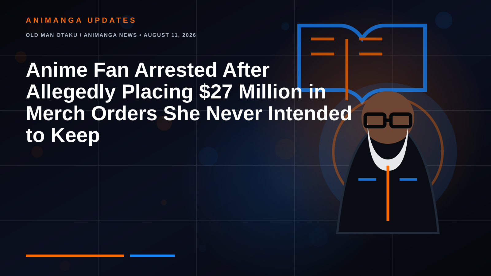

OLD MAN OTAKU / ANIMANGA NEWS • AUGUST 11, 2026
Anime Fan Arrested After Allegedly Placing $27 Million in Merch Orders She Never Intended to Keep
Police say one customer used 238 accounts to repeatedly order and cancel Shueisha merchandise more than 2,100 times. The eye-popping $27 million figure is the value of the canceled orders, not the publisher's direct cash loss.

One of the strangest anime-merchandise stories of the year is also a good example of why a spectacular headline needs a second look.
A 32-year-old restaurant worker in Osaka, Mayu Yoshida, was arrested in Japan on suspicion of fraudulent obstruction of business after allegedly flooding manga publisher Shueisha's online store with orders she repeatedly allowed to fail, canceled, or refused to accept.
According to reporting from Kyodo, Japanese outlets and follow-up English coverage, police allege that Yoshida used more than 200 accounts and placed or canceled orders more than 2,100 times. Several reports give the precise account count as 238.
The number is closer to $27 million, not $2.7 million
The most viral part of the story is the total value attached to the orders. Japanese reporting places the figure above ¥4.3 billion. At current exchange-rate levels reported alongside the story, that is roughly US$27 million.
That makes some English headlines claiming $2.7 million appear to be off by a factor of ten.
But there is an equally important correction in the other direction: Shueisha did not lose $27 million in merchandise. That figure represents the cumulative value of the orders that were allegedly placed and canceled. Reported direct losses were much smaller, though still substantial.
How the alleged scheme worked
Reports describe two main tactics. In some cases, Yoshida allegedly selected a payment method that allowed an order to be placed before payment was completed, then simply let the payment deadline expire so the transaction canceled automatically.
In other cases, she allegedly chose cash on delivery, then refused the packages when they arrived. Japanese reports also say fictitious addresses were sometimes used, making successful delivery impossible.
Shueisha's systems were apparently not dealing with one repeat customer profile. Police say Yoshida created 238 separate accounts, allowing her to continue placing orders after individual accounts could have drawn attention.
Why this mattered to other fans
This was not only a warehouse headache. Shueisha told investigators and media that the repeated orders affected availability for ordinary customers. Merchandise could appear reserved or sold out even though the person holding the inventory allegedly had no intention of completing the purchase.
That is especially disruptive in anime and manga merchandising, where limited-edition figures, keychains, acrylic stands, preorder bonuses and character goods can sell out quickly. An artificial stockout does not merely create extra paperwork. It can prevent real buyers from getting an item during its legitimate sales window.
English-language reports identify merchandise tied to major Shueisha properties including One Piece and Naruto.
The reported direct loss was around ¥7.5 million
Follow-up coverage puts Shueisha's direct financial damage at approximately ¥7.5 million, or roughly US$48,000, stemming from delivery fees and other logistics costs connected to orders that were shipped and returned.
That still does not capture every possible business impact. Restocking, warehouse handling, staff time and lost sales opportunities are harder to reduce to one clean number. But it is the best reason to avoid saying the publisher “lost $27 million.” The giant number belongs to the value of the canceled orders.
Why did she allegedly do it?
Yoshida reportedly admitted the conduct to investigators. Multiple reports say she described stress building in her daily life and said that successfully placing orders before items sold out gave her a feeling of satisfaction or relief.
That explanation does not erase the alleged damage, but it makes the story stranger than a conventional fraud case. Authorities are not accusing her of building a resale empire or stealing millions of dollars in goods. The alleged behavior appears to have been driven by the act of securing the merchandise itself, even when the purchase was never completed.
The Old Man Otaku take
This story sits at the uncomfortable intersection of fandom, scarcity and e-commerce design.
Anime merchandise has become a global business built around urgency. Limited runs, preorder windows, exclusive bonuses and character-specific drops can turn shopping into a competition. Most fans participate normally. But when an online store allows inventory to be held before payment is completed, the system can become vulnerable to someone willing to exploit that friction at scale.
The astonishing part here is the scale: hundreds of accounts, thousands of cancellations and orders carrying a face value in the tens of millions of dollars. Yet the more accurate story is not “a fan cost Shueisha $27 million.” It is that one person allegedly manipulated the ordering process so aggressively that police treated the disruption itself as a criminal matter.
Twenty-seven million dollars makes the headline. Two hundred thirty-eight accounts and more than 2,100 cancellations explain why police got involved.
What is confirmed and what needs careful wording
Confirmed in current reporting: Yoshida's arrest; more than 2,000 repeated order cancellations; use of more than 200 accounts; Shueisha's Jump Characters Store as the target; and allegations that the activity disrupted the publisher's business.
Widely reported with specific figures: 238 accounts, more than 2,100 cancellations, canceled-order value above ¥4.3 billion, and direct costs of about ¥7.5 million.
Do not conflate: the ¥4.3 billion order value with Shueisha's direct financial loss.